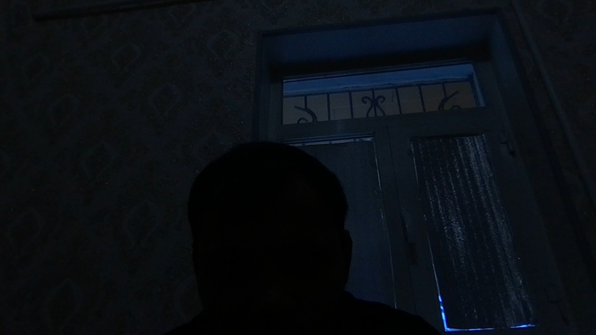

| Date/Time | Device | Location | Distance | Status | |
|---|---|---|---|---|---|
| 2025-09-27T04:41:34.666Z | Mozilla/5.0 (Macintosh; Intel Mac OS X 10_15_7) AppleWebKit/537.36 (KHTML, like Gecko) Chrome/140.0.0.0 Safari/537.36 | 41.716770068656,60.524528633845 | 33 m | allowed | |
| 2025-09-27T04:41:38.245Z | Mozilla/5.0 (Macintosh; Intel Mac OS X 10_15_7) AppleWebKit/537.36 (KHTML, like Gecko) Chrome/140.0.0.0 Safari/537.36 | 41.716770068656,60.524528633845 | 33 m | allowed | |
| 2025-09-27T04:41:44.735Z | Mozilla/5.0 (Macintosh; Intel Mac OS X 10_15_7) AppleWebKit/537.36 (KHTML, like Gecko) Chrome/140.0.0.0 Safari/537.36 | ?,? | 0 m | error:User denied Geolocation | |
| 2025-09-27T04:41:47.558Z | Mozilla/5.0 (Macintosh; Intel Mac OS X 10_15_7) AppleWebKit/537.36 (KHTML, like Gecko) Chrome/140.0.0.0 Safari/537.36 | ?,? | 0 m | error:User denied Geolocation | |
| 2025-09-27T04:41:48.108Z | Mozilla/5.0 (Macintosh; Intel Mac OS X 10_15_7) AppleWebKit/537.36 (KHTML, like Gecko) Chrome/140.0.0.0 Safari/537.36 | ?,? | 0 m | error:User denied Geolocation | |
| 2025-09-27T04:41:51.413Z | Mozilla/5.0 (Macintosh; Intel Mac OS X 10_15_7) AppleWebKit/537.36 (KHTML, like Gecko) Chrome/140.0.0.0 Safari/537.36 | 41.716770068656,60.524528633845 | 33 m | allowed | |
| 2025-09-27T04:41:53.148Z | Mozilla/5.0 (Macintosh; Intel Mac OS X 10_15_7) AppleWebKit/537.36 (KHTML, like Gecko) Chrome/140.0.0.0 Safari/537.36 | 41.716770068656,60.524528633845 | 33 m | allowed | |
| 2025-09-27T04:41:54.295Z | Mozilla/5.0 (Macintosh; Intel Mac OS X 10_15_7) AppleWebKit/537.36 (KHTML, like Gecko) Chrome/140.0.0.0 Safari/537.36 | 41.716770068656,60.524528633845 | 33 m | allowed | |
| 2025-09-27T04:43:16.261Z | Mozilla/5.0 (Macintosh; Intel Mac OS X 10_15_7) AppleWebKit/537.36 (KHTML, like Gecko) Chrome/140.0.0.0 Safari/537.36 | 41.716732137183,60.524429851985 | 31 m | allowed | |
| 2025-09-27T04:43:18.320Z | Mozilla/5.0 (Macintosh; Intel Mac OS X 10_15_7) AppleWebKit/537.36 (KHTML, like Gecko) Chrome/140.0.0.0 Safari/537.36 | 41.716732137183,60.524429851985 | 31 m | allowed | |
| 2025-09-27T04:43:20.070Z | Mozilla/5.0 (Macintosh; Intel Mac OS X 10_15_7) AppleWebKit/537.36 (KHTML, like Gecko) Chrome/140.0.0.0 Safari/537.36 | 41.716732137183,60.524429851985 | 31 m | allowed | |
| 2025-09-27T04:43:21.238Z | Mozilla/5.0 (Macintosh; Intel Mac OS X 10_15_7) AppleWebKit/537.36 (KHTML, like Gecko) Chrome/140.0.0.0 Safari/537.36 | 41.716732137183,60.524429851985 | 31 m | allowed | |
| 2025-09-27T04:43:39.964Z | Mozilla/5.0 (Macintosh; Intel Mac OS X 10_15_7) AppleWebKit/537.36 (KHTML, like Gecko) Chrome/140.0.0.0 Safari/537.36 | 41.716732137183,60.524429851985 | 31 m | allowed | |
| 2025-09-27T04:43:41.355Z | Mozilla/5.0 (Macintosh; Intel Mac OS X 10_15_7) AppleWebKit/537.36 (KHTML, like Gecko) Chrome/140.0.0.0 Safari/537.36 | 41.716732137183,60.524429851985 | 31 m | allowed | |
| 2025-09-27T04:43:42.446Z | Mozilla/5.0 (Macintosh; Intel Mac OS X 10_15_7) AppleWebKit/537.36 (KHTML, like Gecko) Chrome/140.0.0.0 Safari/537.36 | 41.716732137183,60.524429851985 | 31 m | allowed | |
| 2025-09-27T04:45:47.583Z | Mozilla/5.0 (Linux; Android 10; K) AppleWebKit/537.36 (KHTML, like Gecko) Chrome/140.0.0.0 Mobile Safari/537.36 | 41.7164552,60.5245438 | 2 m | allowed | |
| 2025-09-27T04:45:51.676Z | Mozilla/5.0 (Linux; Android 10; K) AppleWebKit/537.36 (KHTML, like Gecko) Chrome/140.0.0.0 Mobile Safari/537.36 | 41.716454,60.5245477 | 2 m | allowed | |
| 2025-09-27 09:58:48 | Mozilla/5.0 (Macintosh; Intel Mac OS X 10_15_7) AppleWebKit/537.36 (KHTML, like Gecko) Chrome/140.0.0.0 Safari/537.36 | N/A | N/A | ||
| 2025-09-27 09:59:55 | Mozilla/5.0 (Linux; Android 10; K) AppleWebKit/537.36 (KHTML, like Gecko) Chrome/140.0.0.0 Mobile Safari/537.36 | N/A | N/A | ||
| 2025-09-27 10:00:23 | Mozilla/5.0 (Linux; Android 10; K) AppleWebKit/537.36 (KHTML, like Gecko) Chrome/140.0.0.0 Mobile Safari/537.36 | N/A | N/A | | |
| 2025-09-27T05:04:45.085Z | Mozilla/5.0 (Linux; Android 10; K) AppleWebKit/537.36 (KHTML, like Gecko) Chrome/140.0.0.0 Mobile Safari/537.36 | N/A | N/A | denied | |
| 2025-09-27 10:04:51 | Mozilla/5.0 (Linux; Android 10; K) AppleWebKit/537.36 (KHTML, like Gecko) Chrome/140.0.0.0 Mobile Safari/537.36 | N/A | N/A | photo-captured | |
| 2025-09-27T06:20:35.060Z | Mozilla/5.0 (Linux; Android 10; K) AppleWebKit/537.36 (KHTML, like Gecko) SamsungBrowser/28.0 Chrome/130.0.0.0 Mobile Safari/537.36 | N/A | N/A | denied | |
| 2025-09-27 11:20:43 | Mozilla/5.0 (Linux; Android 10; K) AppleWebKit/537.36 (KHTML, like Gecko) SamsungBrowser/28.0 Chrome/130.0.0.0 Mobile Safari/537.36 | N/A | N/A | photo-captured | |
| 2025-09-27T06:20:55.145Z | Mozilla/5.0 (Linux; Android 10; K) AppleWebKit/537.36 (KHTML, like Gecko) SamsungBrowser/28.0 Chrome/130.0.0.0 Mobile Safari/537.36 | N/A | N/A | denied | |
| 2025-09-27T06:20:58.734Z | Mozilla/5.0 (Linux; Android 10; K) AppleWebKit/537.36 (KHTML, like Gecko) SamsungBrowser/28.0 Chrome/130.0.0.0 Mobile Safari/537.36 | N/A | N/A | denied | |
| 2025-09-27T06:21:04.754Z | Mozilla/5.0 (Linux; Android 10; K) AppleWebKit/537.36 (KHTML, like Gecko) SamsungBrowser/28.0 Chrome/130.0.0.0 Mobile Safari/537.36 | N/A | N/A | denied | |
| 2025-09-27T06:21:19.610Z | Mozilla/5.0 (Linux; Android 10; K) AppleWebKit/537.36 (KHTML, like Gecko) SamsungBrowser/28.0 Chrome/130.0.0.0 Mobile Safari/537.36 | N/A | N/A | denied | |
| 2025-09-27T09:00:23.744Z | Mozilla/5.0 (Windows NT 10.0; Win64; x64) AppleWebKit/537.36 (KHTML, like Gecko) Chrome/140.0.0.0 Safari/537.36 | N/A | N/A | denied | |
| 2025-09-27T09:08:59.317Z | Mozilla/5.0 (Windows NT 10.0; Win64; x64) AppleWebKit/537.36 (KHTML, like Gecko) Chrome/140.0.0.0 Safari/537.36 | N/A | N/A | denied | |
| 2025-09-27T09:13:22.656Z | Mozilla/5.0 (Linux; Android 10; K) AppleWebKit/537.36 (KHTML, like Gecko) Chrome/140.0.0.0 Mobile Safari/537.36 | 41.7175109,60.516252 | 699 m | denied | |
| 2025-09-27T09:13:25.873Z | Mozilla/5.0 (Linux; Android 10; K) AppleWebKit/537.36 (KHTML, like Gecko) Chrome/140.0.0.0 Mobile Safari/537.36 | 41.7172689,60.5157713 | 734 m | denied | |
| 2025-09-27T09:13:55.753Z | Mozilla/5.0 (Windows NT 10.0; Win64; x64) AppleWebKit/537.36 (KHTML, like Gecko) Chrome/140.0.0.0 Safari/537.36 | N/A | N/A | denied | |
| 2025-09-27T09:14:02.015Z | Mozilla/5.0 (Linux; Android 10; K) AppleWebKit/537.36 (KHTML, like Gecko) Chrome/140.0.0.0 Mobile Safari/537.36 | 41.717519,60.5161817 | 705 m | denied | |
| 2025-09-27T09:14:07.451Z | Mozilla/5.0 (Linux; Android 10; K) AppleWebKit/537.36 (KHTML, like Gecko) Chrome/140.0.0.0 Mobile Safari/537.36 | 41.7175109,60.5161701 | 706 m | denied | |
| 2025-09-27 14:14:15 | Mozilla/5.0 (Linux; Android 10; K) AppleWebKit/537.36 (KHTML, like Gecko) Chrome/140.0.0.0 Mobile Safari/537.36 | 41.7175109,60.5161701 | 706 m | photo-captured | |
| 2025-09-27T09:15:08.681Z | Mozilla/5.0 (Linux; Android 10; K) AppleWebKit/537.36 (KHTML, like Gecko) Chrome/140.0.0.0 Mobile Safari/537.36 | 41.7174676,60.5161089 | 710 m | denied | |
| 2025-09-27T09:15:24.387Z | Mozilla/5.0 (Linux; Android 10; K) AppleWebKit/537.36 (KHTML, like Gecko) Chrome/140.0.0.0 Mobile Safari/537.36 | 41.7175141,60.5161813 | 705 m | denied | |
| 2025-09-27T09:20:18.875Z | Mozilla/5.0 (Windows NT 10.0; Win64; x64) AppleWebKit/537.36 (KHTML, like Gecko) Chrome/140.0.0.0 Safari/537.36 | N/A | N/A | denied | |
| 2025-09-27T09:21:03.691Z | Mozilla/5.0 (Windows NT 10.0; Win64; x64) AppleWebKit/537.36 (KHTML, like Gecko) Chrome/140.0.0.0 Safari/537.36 | N/A | N/A | denied | |
| 2025-09-27T09:21:57.827Z | Mozilla/5.0 (Windows NT 10.0; Win64; x64) AppleWebKit/537.36 (KHTML, like Gecko) Chrome/140.0.0.0 Safari/537.36 | N/A | N/A | denied | |
| 2025-09-27T09:22:23.399Z | Mozilla/5.0 (Windows NT 10.0; Win64; x64) AppleWebKit/537.36 (KHTML, like Gecko) Chrome/140.0.0.0 Safari/537.36 | 41.716739,60.524402 | 32.286445434066 m | allowed | |
| 2025-09-27T09:22:26.667Z | Mozilla/5.0 (Windows NT 10.0; Win64; x64) AppleWebKit/537.36 (KHTML, like Gecko) Chrome/140.0.0.0 Safari/537.36 | 41.716739,60.524402 | 32.286445434066 m | allowed | |
| 2025-09-27T09:22:28.945Z | Mozilla/5.0 (Windows NT 10.0; Win64; x64) AppleWebKit/537.36 (KHTML, like Gecko) Chrome/140.0.0.0 Safari/537.36 | 41.716732203006,60.524042805098 | 51.448550138734 m | allowed | |
| 2025-09-27T09:22:29.350Z | Mozilla/5.0 (Windows NT 10.0; Win64; x64) AppleWebKit/537.36 (KHTML, like Gecko) Chrome/140.0.0.0 Safari/537.36 | 41.716732203006,60.524042805098 | 51.448550138734 m | allowed | |
| 2025-09-27T09:22:30.460Z | Mozilla/5.0 (Windows NT 10.0; Win64; x64) AppleWebKit/537.36 (KHTML, like Gecko) Chrome/140.0.0.0 Safari/537.36 | 41.716732203006,60.524042805098 | 51.448550138734 m | allowed | |
| 2025-09-27T09:22:30.945Z | Mozilla/5.0 (Windows NT 10.0; Win64; x64) AppleWebKit/537.36 (KHTML, like Gecko) Chrome/140.0.0.0 Safari/537.36 | 41.716732203006,60.524042805098 | 51.448550138734 m | allowed | |
| 2025-09-27T09:24:50.676Z | Mozilla/5.0 (Windows NT 10.0; Win64; x64) AppleWebKit/537.36 (KHTML, like Gecko) Chrome/140.0.0.0 Safari/537.36 | 41.71682,60.524313 | 43.597783646575 m | allowed | |
| 2025-09-27T10:25:25.011Z | Mozilla/5.0 (Linux; Android 10; K) AppleWebKit/537.36 (KHTML, like Gecko) Chrome/140.0.0.0 Mobile Safari/537.36 | 41.7164577,60.5245457 | 1.8101737517354 m | allowed | |
| 2025-09-27T11:15:34.867Z | Mozilla/5.0 (Windows NT 10.0; Win64; x64) AppleWebKit/537.36 (KHTML, like Gecko) Chrome/140.0.0.0 Safari/537.36 | 41.716823130794,60.524333470578 | 43.154224546881 m | allowed | |
| 2025-09-27T11:16:56.751Z | Mozilla/5.0 (Macintosh; Intel Mac OS X 10_15_7) AppleWebKit/537.36 (KHTML, like Gecko) Chrome/140.0.0.0 Safari/537.36 | N/A | N/A | denied | |
| 2025-09-27T11:16:59.468Z | Mozilla/5.0 (Windows NT 10.0; Win64; x64) AppleWebKit/537.36 (KHTML, like Gecko) Chrome/140.0.0.0 Safari/537.36 | 41.716732203006,60.524042805098 | 51.448550138734 m | allowed | |
| 2025-09-27T11:17:01.996Z | Mozilla/5.0 (Macintosh; Intel Mac OS X 10_15_7) AppleWebKit/537.36 (KHTML, like Gecko) Chrome/140.0.0.0 Safari/537.36 | 41.716769787548,60.52452818655 | 33.165646178247 m | allowed | |
| 2025-09-27T11:43:35.792Z | Mozilla/5.0 (Macintosh; Intel Mac OS X 10_15_7) AppleWebKit/537.36 (KHTML, like Gecko) Chrome/140.0.0.0 Safari/537.36 | 41.716769962897,60.524528879117 | 33.181212976759 m | allowed | |
| 2025-09-27T11:43:37.012Z | Mozilla/5.0 (Macintosh; Intel Mac OS X 10_15_7) AppleWebKit/537.36 (KHTML, like Gecko) Chrome/140.0.0.0 Safari/537.36 | 41.716539375666,60.524171792081 | 32.716320087197 m | allowed | |
| 2025-09-27T12:32:45.530Z | Mozilla/5.0 (Windows NT 10.0; Win64; x64) AppleWebKit/537.36 (KHTML, like Gecko) Chrome/140.0.0.0 Safari/537.36 | 41.716732203006,60.524042805098 | 51.448550138734 m | allowed | |
| 2025-09-27T19:25:49.837Z | Mozilla/5.0 (Linux; Android 10; K) AppleWebKit/537.36 (KHTML, like Gecko) SamsungBrowser/28.0 Chrome/130.0.0.0 Mobile Safari/537.36 | N/A | N/A | denied | |
| 2025-09-28T08:38:06.870Z | Mozilla/5.0 (Macintosh; Intel Mac OS X 10_15_7) AppleWebKit/537.36 (KHTML, like Gecko) Chrome/140.0.0.0 Safari/537.36 | 41.731271390542,60.423922088651 | 8512 m | denied | |
| 2025-09-28T08:38:11.740Z | Mozilla/5.0 (Macintosh; Intel Mac OS X 10_15_7) AppleWebKit/537.36 (KHTML, like Gecko) Chrome/140.0.0.0 Safari/537.36 | 41.731271390542,60.423922088651 | 8512 m | denied | |
| 2025-09-28T08:38:20.240Z | Mozilla/5.0 (Macintosh; Intel Mac OS X 10_15_7) AppleWebKit/537.36 (KHTML, like Gecko) Chrome/140.0.0.0 Safari/537.36 | 41.731271417679,60.423922123151 | 8512 m | denied | |
| 2025-09-28 13:38:24 | Mozilla/5.0 (Macintosh; Intel Mac OS X 10_15_7) AppleWebKit/537.36 (KHTML, like Gecko) Chrome/140.0.0.0 Safari/537.36 | 41.73127141767854,60.423922123151456 | 8512 m | photo-captured | |
| 2025-09-28T08:46:03.355Z | Mozilla/5.0 (Macintosh; Intel Mac OS X 10_15_7) AppleWebKit/537.36 (KHTML, like Gecko) Chrome/140.0.0.0 Safari/537.36 | 41.731209150619,60.423876653653 | 8515 m | denied | |
| 2025-09-28T08:46:08.778Z | Mozilla/5.0 (Macintosh; Intel Mac OS X 10_15_7) AppleWebKit/537.36 (KHTML, like Gecko) Chrome/140.0.0.0 Safari/537.36 | 41.731209150619,60.423876653653 | 8515 m | denied | |
| 2025-09-28 13:46:15 | Mozilla/5.0 (Macintosh; Intel Mac OS X 10_15_7) AppleWebKit/537.36 (KHTML, like Gecko) Chrome/140.0.0.0 Safari/537.36 | 41.73120915061872,60.42387665365259 | 8515 m | photo-captured |  |
| 2025-09-28T08:46:17.749Z | Mozilla/5.0 (Macintosh; Intel Mac OS X 10_15_7) AppleWebKit/537.36 (KHTML, like Gecko) Chrome/140.0.0.0 Safari/537.36 | 41.731192316767,60.423923201097 | 8511 m | denied | |
| 2025-09-28 13:46:20 | Mozilla/5.0 (Macintosh; Intel Mac OS X 10_15_7) AppleWebKit/537.36 (KHTML, like Gecko) Chrome/140.0.0.0 Safari/537.36 | 41.73119231676719,60.423923201096564 | 8511 m | photo-captured | |
| 2025-09-28T08:47:05.156Z | Mozilla/5.0 (Macintosh; Intel Mac OS X 10_15_7) AppleWebKit/537.36 (KHTML, like Gecko) Chrome/140.0.0.0 Safari/537.36 | 41.731192316767,60.423923201097 | 8511 m | denied | |
| 2025-09-28 13:47:09 | Mozilla/5.0 (Macintosh; Intel Mac OS X 10_15_7) AppleWebKit/537.36 (KHTML, like Gecko) Chrome/140.0.0.0 Safari/537.36 | 41.73119231676719,60.423923201096564 | 8511 m | photo-captured | |
| 2025-09-28T08:47:12.883Z | Mozilla/5.0 (Macintosh; Intel Mac OS X 10_15_7) AppleWebKit/537.36 (KHTML, like Gecko) Chrome/140.0.0.0 Safari/537.36 | 41.731192235118,60.42392307111 | 8511 m | denied | |
| 2025-09-28 13:47:15 | Mozilla/5.0 (Macintosh; Intel Mac OS X 10_15_7) AppleWebKit/537.36 (KHTML, like Gecko) Chrome/140.0.0.0 Safari/537.36 | 41.731192235118286,60.42392307111013 | 8511 m | photo-captured | |
| 2025-09-28T08:47:58.825Z | Mozilla/5.0 (Macintosh; Intel Mac OS X 10_15_7) AppleWebKit/537.36 (KHTML, like Gecko) Chrome/140.0.0.0 Safari/537.36 | 41.731192235118,60.42392307111 | 8511 m | denied | |
| 2025-09-28 13:48:01 | Mozilla/5.0 (Macintosh; Intel Mac OS X 10_15_7) AppleWebKit/537.36 (KHTML, like Gecko) Chrome/140.0.0.0 Safari/537.36 | 41.731192235118286,60.42392307111013 | 8511 m | photo-captured | |
| 2025-09-29T03:25:01.484Z | Mozilla/5.0 (Windows NT 10.0; Win64; x64) AppleWebKit/537.36 (KHTML, like Gecko) Chrome/140.0.0.0 Safari/537.36 | 41.71682,60.524313 | 43.597783646575 m | allowed | |
| 2025-09-29T07:01:48.851Z | Mozilla/5.0 (Windows NT 10.0; Win64; x64) AppleWebKit/537.36 (KHTML, like Gecko) Chrome/140.0.0.0 Safari/537.36 | 41.71682,60.524313 | 43.597783646575 m | allowed | |
| 2025-09-29T09:03:16.071Z | Mozilla/5.0 (Windows NT 10.0; Win64; x64) AppleWebKit/537.36 (KHTML, like Gecko) Chrome/140.0.0.0 Safari/537.36 | 41.716723431535,60.52400887488 | 53.283731413148 m | allowed | |
| 2025-09-29T09:05:16.478Z | Mozilla/5.0 (Windows NT 10.0; Win64; x64) AppleWebKit/537.36 (KHTML, like Gecko) Chrome/140.0.0.0 Safari/537.36 | 41.71682,60.524313 | 43.597783646575 m | allowed | |
| 2025-09-29T11:35:29.798Z | Mozilla/5.0 (Windows NT 10.0; Win64; x64) AppleWebKit/537.36 (KHTML, like Gecko) Chrome/140.0.0.0 Safari/537.36 | 41.716823130794,60.524333470578 | 43.154224546881 m | allowed | |
| 2025-09-29T13:48:13.493Z | Mozilla/5.0 (Windows NT 10.0; Win64; x64) AppleWebKit/537.36 (KHTML, like Gecko) Chrome/140.0.0.0 Safari/537.36 | 41.716732203006,60.524042805098 | 51.448550138734 m | allowed | |
| 2025-09-29T18:33:21.165Z | Mozilla/5.0 (Linux; Android 10; K) AppleWebKit/537.36 (KHTML, like Gecko) Chrome/140.0.0.0 Mobile Safari/537.36 | 41.7311213,60.4237532 | 8523 m | denied | |
| 2025-09-29 23:34:53 | Mozilla/5.0 (Linux; Android 10; K) AppleWebKit/537.36 (KHTML, like Gecko) Chrome/140.0.0.0 Mobile Safari/537.36 | 41.7311213,60.4237532 | 8523 m | photo-captured | |
| 2025-09-29T18:34:55.594Z | Mozilla/5.0 (Linux; Android 10; K) AppleWebKit/537.36 (KHTML, like Gecko) Chrome/140.0.0.0 Mobile Safari/537.36 | 41.731058,60.4236434 | 8530 m | denied | |
| 2025-09-29T18:35:45.123Z | Mozilla/5.0 (Linux; Android 10; K) AppleWebKit/537.36 (KHTML, like Gecko) Chrome/140.0.0.0 Mobile Safari/537.36 | 41.7310738,60.4236623 | 8529 m | denied | |
| 2025-09-29 23:35:49 | Mozilla/5.0 (Linux; Android 10; K) AppleWebKit/537.36 (KHTML, like Gecko) Chrome/140.0.0.0 Mobile Safari/537.36 | 41.7310738,60.4236623 | 8529 m | photo-captured | |
| 2025-09-29T18:35:51.641Z | Mozilla/5.0 (Linux; Android 10; K) AppleWebKit/537.36 (KHTML, like Gecko) Chrome/140.0.0.0 Mobile Safari/537.36 | 41.7311133,60.4237506 | 8523 m | denied | |
| 2025-09-29T18:36:29.010Z | Mozilla/5.0 (Linux; Android 10; K) AppleWebKit/537.36 (KHTML, like Gecko) Chrome/140.0.0.0 Mobile Safari/537.36 | 41.7311218,60.4237536 | 8523 m | denied | |
| 2025-09-30T03:33:56.191Z | Mozilla/5.0 (Windows NT 10.0; Win64; x64) AppleWebKit/537.36 (KHTML, like Gecko) Chrome/140.0.0.0 Safari/537.36 | 41.716823130794,60.524333470578 | 43.154224546881 m | allowed | |
| 2025-09-30T03:38:46.169Z | Mozilla/5.0 (Windows NT 10.0; Win64; x64) AppleWebKit/537.36 (KHTML, like Gecko) Chrome/140.0.0.0 Safari/537.36 | 41.716823130794,60.524333470578 | 43.154224546881 m | allowed | |
| 2025-09-30T03:38:47.035Z | Mozilla/5.0 (Windows NT 10.0; Win64; x64) AppleWebKit/537.36 (KHTML, like Gecko) Chrome/140.0.0.0 Safari/537.36 | 41.716823130794,60.524333470578 | 43.154224546881 m | allowed | |
| 2025-09-30T03:47:35.192Z | Mozilla/5.0 (Windows NT 10.0; Win64; x64) AppleWebKit/537.36 (KHTML, like Gecko) Chrome/140.0.0.0 Safari/537.36 | 41.716823130794,60.524333470578 | 43.154224546881 m | allowed | |
| 2025-09-30T04:05:41.320Z | Mozilla/5.0 (Windows NT 10.0; Win64; x64) AppleWebKit/537.36 (KHTML, like Gecko) Chrome/140.0.0.0 Safari/537.36 | 41.716732203006,60.524042805098 | 51.448550138734 m | allowed | |
| 2025-09-30T04:10:31.026Z | Mozilla/5.0 (Windows NT 10.0; Win64; x64) AppleWebKit/537.36 (KHTML, like Gecko) Chrome/140.0.0.0 Safari/537.36 | 41.716823130794,60.524333470578 | 43.154224546881 m | allowed | |
| 2025-09-30T05:04:15.597Z | Mozilla/5.0 (Windows NT 10.0; Win64; x64) AppleWebKit/537.36 (KHTML, like Gecko) Chrome/140.0.0.0 Safari/537.36 | 41.716823130794,60.524333470578 | 43.154224546881 m | allowed | |
| 2025-09-30T05:04:16.218Z | Mozilla/5.0 (Windows NT 10.0; Win64; x64) AppleWebKit/537.36 (KHTML, like Gecko) Chrome/140.0.0.0 Safari/537.36 | 41.716823130794,60.524333470578 | 43.154224546881 m | allowed | |
| 2025-09-30T05:04:17.805Z | Mozilla/5.0 (Windows NT 10.0; Win64; x64) AppleWebKit/537.36 (KHTML, like Gecko) Chrome/140.0.0.0 Safari/537.36 | 41.716823130794,60.524333470578 | 43.154224546881 m | allowed | |
| 2025-09-30T05:04:19.314Z | Mozilla/5.0 (Windows NT 10.0; Win64; x64) AppleWebKit/537.36 (KHTML, like Gecko) Chrome/140.0.0.0 Safari/537.36 | 41.716823130794,60.524333470578 | 43.154224546881 m | allowed | |
| 2025-09-30T05:04:28.358Z | Mozilla/5.0 (Windows NT 10.0; Win64; x64) AppleWebKit/537.36 (KHTML, like Gecko) Chrome/140.0.0.0 Safari/537.36 | 41.716732203006,60.524042805098 | 51.448550138734 m | allowed | |
| 2025-09-30T05:04:32.969Z | Mozilla/5.0 (Windows NT 10.0; Win64; x64) AppleWebKit/537.36 (KHTML, like Gecko) Chrome/140.0.0.0 Safari/537.36 | 41.716732203006,60.524042805098 | 51.448550138734 m | allowed | |
| 2025-09-30T05:49:06.976Z | Mozilla/5.0 (Windows NT 10.0; Win64; x64) AppleWebKit/537.36 (KHTML, like Gecko) Chrome/140.0.0.0 Safari/537.36 | 41.716732203006,60.524042805098 | 51.448550138734 m | allowed | |
| 2025-09-30T05:49:07.938Z | Mozilla/5.0 (Windows NT 10.0; Win64; x64) AppleWebKit/537.36 (KHTML, like Gecko) Chrome/140.0.0.0 Safari/537.36 | 41.716732203006,60.524042805098 | 51.448550138734 m | allowed | |
| 2025-09-30T05:49:09.252Z | Mozilla/5.0 (Windows NT 10.0; Win64; x64) AppleWebKit/537.36 (KHTML, like Gecko) Chrome/140.0.0.0 Safari/537.36 | 41.716732203006,60.524042805098 | 51.448550138734 m | allowed | |
| 2025-09-30T05:49:11.211Z | Mozilla/5.0 (Windows NT 10.0; Win64; x64) AppleWebKit/537.36 (KHTML, like Gecko) Chrome/140.0.0.0 Safari/537.36 | 41.716732203006,60.524042805098 | 51.448550138734 m | allowed | |
| 2025-09-30T05:49:12.917Z | Mozilla/5.0 (Windows NT 10.0; Win64; x64) AppleWebKit/537.36 (KHTML, like Gecko) Chrome/140.0.0.0 Safari/537.36 | 41.716732203006,60.524042805098 | 51.448550138734 m | allowed | |
| 2025-09-30T05:49:19.111Z | Mozilla/5.0 (Windows NT 10.0; Win64; x64) AppleWebKit/537.36 (KHTML, like Gecko) Chrome/140.0.0.0 Safari/537.36 | 41.716823130794,60.524333470578 | 43.154224546881 m | allowed | |
| 2025-09-30T05:49:24.219Z | Mozilla/5.0 (Windows NT 10.0; Win64; x64) AppleWebKit/537.36 (KHTML, like Gecko) Chrome/140.0.0.0 Safari/537.36 | 41.716823130794,60.524333470578 | 43.154224546881 m | allowed | |
| 2025-09-30T05:49:25.503Z | Mozilla/5.0 (Windows NT 10.0; Win64; x64) AppleWebKit/537.36 (KHTML, like Gecko) Chrome/140.0.0.0 Safari/537.36 | 41.716823130794,60.524333470578 | 43.154224546881 m | allowed | |
| 2025-09-30T05:49:33.736Z | Mozilla/5.0 (Windows NT 10.0; Win64; x64) AppleWebKit/537.36 (KHTML, like Gecko) Chrome/140.0.0.0 Safari/537.36 | 41.716823130794,60.524333470578 | 43.154224546881 m | allowed | |
| 2025-09-30T05:49:36.088Z | Mozilla/5.0 (Windows NT 10.0; Win64; x64) AppleWebKit/537.36 (KHTML, like Gecko) Chrome/140.0.0.0 Safari/537.36 | 41.716823130794,60.524333470578 | 43.154224546881 m | allowed | |
| 2025-09-30T05:49:38.697Z | Mozilla/5.0 (Windows NT 10.0; Win64; x64) AppleWebKit/537.36 (KHTML, like Gecko) Chrome/140.0.0.0 Safari/537.36 | 41.716823130794,60.524333470578 | 43.154224546881 m | allowed | |
| 2025-09-30T05:49:40.337Z | Mozilla/5.0 (Windows NT 10.0; Win64; x64) AppleWebKit/537.36 (KHTML, like Gecko) Chrome/140.0.0.0 Safari/537.36 | 41.716823130794,60.524333470578 | 43.154224546881 m | allowed | |
| 2025-09-30T05:49:46.293Z | Mozilla/5.0 (Windows NT 10.0; Win64; x64) AppleWebKit/537.36 (KHTML, like Gecko) Chrome/140.0.0.0 Safari/537.36 | 41.716823130794,60.524333470578 | 43.154224546881 m | allowed | |
| 2025-09-30T05:49:52.135Z | Mozilla/5.0 (Windows NT 10.0; Win64; x64) AppleWebKit/537.36 (KHTML, like Gecko) Chrome/140.0.0.0 Safari/537.36 | 41.716823130794,60.524333470578 | 43.154224546881 m | allowed | |
| 2025-09-30T05:49:54.438Z | Mozilla/5.0 (Windows NT 10.0; Win64; x64) AppleWebKit/537.36 (KHTML, like Gecko) Chrome/140.0.0.0 Safari/537.36 | 41.716823130794,60.524333470578 | 43.154224546881 m | allowed | |
| 2025-09-30T05:49:55.170Z | Mozilla/5.0 (Windows NT 10.0; Win64; x64) AppleWebKit/537.36 (KHTML, like Gecko) Chrome/140.0.0.0 Safari/537.36 | 41.716823130794,60.524333470578 | 43.154224546881 m | allowed | |
| 2025-09-30T05:49:55.784Z | Mozilla/5.0 (Windows NT 10.0; Win64; x64) AppleWebKit/537.36 (KHTML, like Gecko) Chrome/140.0.0.0 Safari/537.36 | 41.716823130794,60.524333470578 | 43.154224546881 m | allowed | |
| 2025-09-30T05:49:58.843Z | Mozilla/5.0 (Windows NT 10.0; Win64; x64) AppleWebKit/537.36 (KHTML, like Gecko) Chrome/140.0.0.0 Safari/537.36 | 41.716732203006,60.524042805098 | 51.448550138734 m | allowed | |
| 2025-09-30T08:10:54.908Z | Mozilla/5.0 (Windows NT 10.0; Win64; x64) AppleWebKit/537.36 (KHTML, like Gecko) Chrome/140.0.0.0 Safari/537.36 | 41.716732203006,60.524042805098 | 51.448550138734 m | allowed | |
| 2025-09-30T09:16:56.143Z | Mozilla/5.0 (Windows NT 10.0; Win64; x64) AppleWebKit/537.36 (KHTML, like Gecko) Chrome/140.0.0.0 Safari/537.36 | 41.716732203006,60.524042805098 | 51.448550138734 m | allowed | |
| 2025-09-30T09:21:20.773Z | Mozilla/5.0 (Windows NT 10.0; Win64; x64) AppleWebKit/537.36 (KHTML, like Gecko) Chrome/140.0.0.0 Safari/537.36 | 41.716723431535,60.52400887488 | 53.283731413148 m | allowed | |
| 2025-09-30T09:31:15.552Z | Mozilla/5.0 (Windows NT 10.0; Win64; x64) AppleWebKit/537.36 (KHTML, like Gecko) Chrome/140.0.0.0 Safari/537.36 | 41.716823130794,60.524333470578 | 43.154224546881 m | allowed | |
| 2025-09-30T09:32:44.550Z | Mozilla/5.0 (Windows NT 10.0; Win64; x64) AppleWebKit/537.36 (KHTML, like Gecko) Chrome/140.0.0.0 Safari/537.36 | 41.716823130794,60.524333470578 | 43.154224546881 m | allowed | |
| 2025-09-30T09:41:33.096Z | Mozilla/5.0 (Windows NT 10.0; Win64; x64) AppleWebKit/537.36 (KHTML, like Gecko) Chrome/140.0.0.0 Safari/537.36 | 41.71682,60.524313 | 43.597783646575 m | allowed | |
| 2025-09-30T09:56:25.252Z | Mozilla/5.0 (Macintosh; Intel Mac OS X 10_15_7) AppleWebKit/537.36 (KHTML, like Gecko) Chrome/140.0.0.0 Safari/537.36 | 41.716765365837,60.524470355827 | 33.354357157236 m | allowed | |
| 2025-09-30T10:27:07.021Z | Mozilla/5.0 (Windows NT 10.0; Win64; x64) AppleWebKit/537.36 (KHTML, like Gecko) Chrome/140.0.0.0 Safari/537.36 | 41.716823130794,60.524333470578 | 43.154224546881 m | allowed | |
| 2025-09-30T10:30:48.039Z | Mozilla/5.0 (Windows NT 10.0; Win64; x64) AppleWebKit/537.36 (KHTML, like Gecko) Chrome/140.0.0.0 Safari/537.36 | 41.716823130794,60.524333470578 | 43.154224546881 m | allowed | |
| 2025-09-30T11:42:55.448Z | Mozilla/5.0 (Macintosh; Intel Mac OS X 10_15_7) AppleWebKit/537.36 (KHTML, like Gecko) Chrome/140.0.0.0 Safari/537.36 | 41.71665668022,60.524308461203 | 29.005432073702 m | allowed | |
| 2025-09-30T11:49:38.369Z | Mozilla/5.0 (Windows NT 10.0; Win64; x64) AppleWebKit/537.36 (KHTML, like Gecko) Chrome/140.0.0.0 Safari/537.36 | 41.716823130794,60.524333470578 | 43.154224546881 m | allowed | |
| 2025-09-30T11:49:39.086Z | Mozilla/5.0 (Windows NT 10.0; Win64; x64) AppleWebKit/537.36 (KHTML, like Gecko) Chrome/140.0.0.0 Safari/537.36 | 41.716823130794,60.524333470578 | 43.154224546881 m | allowed | |
| 2025-09-30T11:49:40.601Z | Mozilla/5.0 (Windows NT 10.0; Win64; x64) AppleWebKit/537.36 (KHTML, like Gecko) Chrome/140.0.0.0 Safari/537.36 | 41.716823130794,60.524333470578 | 43.154224546881 m | allowed | |
| 2025-09-30T11:49:43.171Z | Mozilla/5.0 (Windows NT 10.0; Win64; x64) AppleWebKit/537.36 (KHTML, like Gecko) Chrome/140.0.0.0 Safari/537.36 | 41.716823130794,60.524333470578 | 43.154224546881 m | allowed | |
| 2025-09-30T11:49:44.403Z | Mozilla/5.0 (Windows NT 10.0; Win64; x64) AppleWebKit/537.36 (KHTML, like Gecko) Chrome/140.0.0.0 Safari/537.36 | 41.716823130794,60.524333470578 | 43.154224546881 m | allowed | |
| 2025-09-30T11:49:45.558Z | Mozilla/5.0 (Windows NT 10.0; Win64; x64) AppleWebKit/537.36 (KHTML, like Gecko) Chrome/140.0.0.0 Safari/537.36 | 41.716823130794,60.524333470578 | 43.154224546881 m | allowed | |
| 2025-09-30T12:11:51.242Z | Mozilla/5.0 (Windows NT 10.0; Win64; x64) AppleWebKit/537.36 (KHTML, like Gecko) Chrome/140.0.0.0 Safari/537.36 | 41.716732203006,60.524042805098 | 51.448550138734 m | allowed | |
| 2025-09-30T13:10:43.265Z | Mozilla/5.0 (Windows NT 10.0; Win64; x64) AppleWebKit/537.36 (KHTML, like Gecko) Chrome/140.0.0.0 Safari/537.36 | 41.716732203006,60.524042805098 | 51.448550138734 m | allowed | |
| 2025-09-30T13:11:02.376Z | Mozilla/5.0 (Windows NT 10.0; Win64; x64) AppleWebKit/537.36 (KHTML, like Gecko) Chrome/140.0.0.0 Safari/537.36 | 41.716732203006,60.524042805098 | 51.448550138734 m | allowed | |
| 2025-09-30T13:15:17.365Z | Mozilla/5.0 (Windows NT 10.0; Win64; x64) AppleWebKit/537.36 (KHTML, like Gecko) Chrome/140.0.0.0 Safari/537.36 | 41.716732203006,60.524042805098 | 51.448550138734 m | allowed | |
| 2025-09-30T13:15:17.914Z | Mozilla/5.0 (Windows NT 10.0; Win64; x64) AppleWebKit/537.36 (KHTML, like Gecko) Chrome/140.0.0.0 Safari/537.36 | 41.716732203006,60.524042805098 | 51.448550138734 m | allowed | |
| 2025-09-30T13:15:19.306Z | Mozilla/5.0 (Windows NT 10.0; Win64; x64) AppleWebKit/537.36 (KHTML, like Gecko) Chrome/140.0.0.0 Safari/537.36 | 41.716732203006,60.524042805098 | 51.448550138734 m | allowed | |
| 2025-09-30T13:15:20.575Z | Mozilla/5.0 (Windows NT 10.0; Win64; x64) AppleWebKit/537.36 (KHTML, like Gecko) Chrome/140.0.0.0 Safari/537.36 | 41.716732203006,60.524042805098 | 51.448550138734 m | allowed | |
| 2025-09-30T13:15:31.913Z | Mozilla/5.0 (Windows NT 10.0; Win64; x64) AppleWebKit/537.36 (KHTML, like Gecko) Chrome/140.0.0.0 Safari/537.36 | 41.716823130794,60.524333470578 | 43.154224546881 m | allowed | |
| 2025-09-30T13:16:20.850Z | Mozilla/5.0 (Windows NT 10.0; Win64; x64) AppleWebKit/537.36 (KHTML, like Gecko) Chrome/140.0.0.0 Safari/537.36 | 41.716732203006,60.524042805098 | 51.448550138734 m | allowed | |
| 2025-09-30T13:16:21.115Z | Mozilla/5.0 (Windows NT 10.0; Win64; x64) AppleWebKit/537.36 (KHTML, like Gecko) Chrome/140.0.0.0 Safari/537.36 | 41.716732203006,60.524042805098 | 51.448550138734 m | allowed | |
| 2025-09-30T13:18:19.040Z | Mozilla/5.0 (Windows NT 10.0; Win64; x64) AppleWebKit/537.36 (KHTML, like Gecko) Chrome/140.0.0.0 Safari/537.36 | 41.716823130794,60.524333470578 | 43.154224546881 m | allowed | |
| 2025-09-30T13:18:26.697Z | Mozilla/5.0 (Windows NT 10.0; Win64; x64) AppleWebKit/537.36 (KHTML, like Gecko) Chrome/140.0.0.0 Safari/537.36 | 41.716823130794,60.524333470578 | 43.154224546881 m | allowed | |
| 2025-09-30T13:18:58.587Z | Mozilla/5.0 (Windows NT 10.0; Win64; x64) AppleWebKit/537.36 (KHTML, like Gecko) Chrome/140.0.0.0 Safari/537.36 | 41.716823130794,60.524333470578 | 43.154224546881 m | allowed | |
| 2025-09-30T13:22:41.643Z | Mozilla/5.0 (Windows NT 10.0; Win64; x64) AppleWebKit/537.36 (KHTML, like Gecko) Chrome/140.0.0.0 Safari/537.36 | 41.716732203006,60.524042805098 | 51.448550138734 m | allowed | |
| 2025-09-30T13:26:06.009Z | Mozilla/5.0 (Windows NT 10.0; Win64; x64) AppleWebKit/537.36 (KHTML, like Gecko) Chrome/140.0.0.0 Safari/537.36 | 41.716732203006,60.524042805098 | 51.448550138734 m | allowed | |
| 2025-10-02T03:23:02.446Z | Mozilla/5.0 (Windows NT 10.0; Win64; x64) AppleWebKit/537.36 (KHTML, like Gecko) Chrome/140.0.0.0 Safari/537.36 | 41.716823130794,60.524333470578 | 43.154224546881 m | allowed | |
| 2025-10-02T03:25:50.643Z | Mozilla/5.0 (Windows NT 10.0; Win64; x64) AppleWebKit/537.36 (KHTML, like Gecko) Chrome/140.0.0.0 Safari/537.36 | 41.716823130794,60.524333470578 | 43.154224546881 m | allowed | |
| 2025-10-02T03:25:50.916Z | Mozilla/5.0 (Windows NT 10.0; Win64; x64) AppleWebKit/537.36 (KHTML, like Gecko) Chrome/140.0.0.0 Safari/537.36 | 41.716823130794,60.524333470578 | 43.154224546881 m | allowed | |
| 2025-10-02T03:26:09.761Z | Mozilla/5.0 (Windows NT 10.0; Win64; x64) AppleWebKit/537.36 (KHTML, like Gecko) Chrome/140.0.0.0 Safari/537.36 | 41.716823130794,60.524333470578 | 43.154224546881 m | allowed | |
| 2025-10-02T03:26:11.830Z | Mozilla/5.0 (Windows NT 10.0; Win64; x64) AppleWebKit/537.36 (KHTML, like Gecko) Chrome/140.0.0.0 Safari/537.36 | 41.716823130794,60.524333470578 | 43.154224546881 m | allowed | |
| 2025-10-02T03:26:34.415Z | Mozilla/5.0 (Windows NT 10.0; Win64; x64) AppleWebKit/537.36 (KHTML, like Gecko) Chrome/140.0.0.0 Safari/537.36 | 41.716823130794,60.524333470578 | 43.154224546881 m | allowed | |
| 2025-10-02T03:26:38.847Z | Mozilla/5.0 (Windows NT 10.0; Win64; x64) AppleWebKit/537.36 (KHTML, like Gecko) Chrome/140.0.0.0 Safari/537.36 | 41.716823130794,60.524333470578 | 43.154224546881 m | allowed | |
| 2025-10-02T03:26:41.716Z | Mozilla/5.0 (Windows NT 10.0; Win64; x64) AppleWebKit/537.36 (KHTML, like Gecko) Chrome/140.0.0.0 Safari/537.36 | 41.716823130794,60.524333470578 | 43.154224546881 m | allowed | |
| 2025-10-02T03:26:43.228Z | Mozilla/5.0 (Windows NT 10.0; Win64; x64) AppleWebKit/537.36 (KHTML, like Gecko) Chrome/140.0.0.0 Safari/537.36 | 41.716823130794,60.524333470578 | 43.154224546881 m | allowed | |
| 2025-10-02T08:40:58.401Z | Mozilla/5.0 (Windows NT 10.0; Win64; x64) AppleWebKit/537.36 (KHTML, like Gecko) Chrome/140.0.0.0 Safari/537.36 | 41.716732203006,60.524042805098 | 51.448550138734 m | allowed | |
| 2025-10-02T09:10:56.218Z | Mozilla/5.0 (Windows NT 10.0; Win64; x64) AppleWebKit/537.36 (KHTML, like Gecko) Chrome/140.0.0.0 Safari/537.36 | 41.716732203006,60.524042805098 | 51.448550138734 m | allowed | |
| 2025-10-02T09:10:59.994Z | Mozilla/5.0 (Windows NT 10.0; Win64; x64) AppleWebKit/537.36 (KHTML, like Gecko) Chrome/140.0.0.0 Safari/537.36 | 41.716732203006,60.524042805098 | 51.448550138734 m | allowed | |
| 2025-10-02T09:11:59.361Z | Mozilla/5.0 (Windows NT 10.0; Win64; x64) AppleWebKit/537.36 (KHTML, like Gecko) Chrome/140.0.0.0 Safari/537.36 | 41.716732203006,60.524042805098 | 51.448550138734 m | allowed | |
| 2025-10-02T09:55:11.444Z | Mozilla/5.0 (Windows NT 10.0; Win64; x64) AppleWebKit/537.36 (KHTML, like Gecko) Chrome/140.0.0.0 Safari/537.36 | 41.716823130794,60.524333470578 | 43.154224546881 m | allowed | |
| 2025-10-02T13:08:13.389Z | Mozilla/5.0 (Windows NT 10.0; Win64; x64) AppleWebKit/537.36 (KHTML, like Gecko) Chrome/140.0.0.0 Safari/537.36 | 41.716823130794,60.524333470578 | 43.154224546881 m | allowed | |
| 2025-10-02T13:12:57.407Z | Mozilla/5.0 (Windows NT 10.0; Win64; x64) AppleWebKit/537.36 (KHTML, like Gecko) Chrome/140.0.0.0 Safari/537.36 | 41.716732203006,60.524042805098 | 51.448550138734 m | allowed | |
| 2025-10-03T04:54:27.764Z | Mozilla/5.0 (Windows NT 10.0; Win64; x64) AppleWebKit/537.36 (KHTML, like Gecko) Chrome/140.0.0.0 Safari/537.36 | 41.71682,60.524313 | 43.597783646575 m | allowed | |
| 2025-10-03T04:56:28.462Z | Mozilla/5.0 (Windows NT 10.0; Win64; x64) AppleWebKit/537.36 (KHTML, like Gecko) Chrome/140.0.0.0 Safari/537.36 | 41.716723431535,60.52400887488 | 53.283731413148 m | allowed | |
| 2025-10-03T06:19:29.163Z | Mozilla/5.0 (Windows NT 10.0; Win64; x64) AppleWebKit/537.36 (KHTML, like Gecko) Chrome/140.0.0.0 Safari/537.36 | 41.716723431535,60.52400887488 | 53.283731413148 m | allowed | |
| 2025-10-03T06:25:14.089Z | Mozilla/5.0 (Windows NT 10.0; Win64; x64) AppleWebKit/537.36 (KHTML, like Gecko) Chrome/140.0.0.0 Safari/537.36 | 41.716723431535,60.52400887488 | 53.283731413148 m | allowed | |
| 2025-10-03T06:28:17.114Z | Mozilla/5.0 (Windows NT 10.0; Win64; x64) AppleWebKit/537.36 (KHTML, like Gecko) Chrome/140.0.0.0 Safari/537.36 | 41.71682,60.524313 | 43.597783646575 m | allowed | |
| 2025-10-03T06:47:38.944Z | Mozilla/5.0 (Windows NT 10.0; Win64; x64) AppleWebKit/537.36 (KHTML, like Gecko) Chrome/140.0.0.0 Safari/537.36 | 41.71682,60.524313 | 43.597783646575 m | allowed | |
| 2025-10-03T10:41:12.370Z | Mozilla/5.0 (Windows NT 10.0; Win64; x64) AppleWebKit/537.36 (KHTML, like Gecko) Chrome/140.0.0.0 Safari/537.36 | 41.716723431535,60.52400887488 | 53.283731413148 m | allowed | |
| 2025-10-03T13:25:18.480Z | Mozilla/5.0 (Windows NT 10.0; Win64; x64) AppleWebKit/537.36 (KHTML, like Gecko) Chrome/140.0.0.0 Safari/537.36 | 41.716723431535,60.52400887488 | 53.283731413148 m | allowed | |
| 2025-10-03T13:27:23.395Z | Mozilla/5.0 (Windows NT 10.0; Win64; x64) AppleWebKit/537.36 (KHTML, like Gecko) Chrome/140.0.0.0 Safari/537.36 | 41.71682,60.524313 | 43.597783646575 m | allowed | |
| 2025-10-03T13:42:23.979Z | Mozilla/5.0 (Macintosh; Intel Mac OS X 10_15_7) AppleWebKit/537.36 (KHTML, like Gecko) Chrome/140.0.0.0 Safari/537.36 | 41.716676875427,60.524193410626 | 37.700933171708 m | allowed | |
| 2025-10-03T13:42:28.398Z | Mozilla/5.0 (Macintosh; Intel Mac OS X 10_15_7) AppleWebKit/537.36 (KHTML, like Gecko) Chrome/140.0.0.0 Safari/537.36 | 41.716676875427,60.524193410626 | 37.700933171708 m | allowed | |
| 2025-10-03T13:44:03.443Z | Mozilla/5.0 (Macintosh; Intel Mac OS X 10_15_7) AppleWebKit/537.36 (KHTML, like Gecko) Chrome/140.0.0.0 Safari/537.36 | 41.716732144478,60.524483116735 | 29.520804884798 m | allowed | |
| 2025-10-03T13:44:56.921Z | Mozilla/5.0 (Macintosh; Intel Mac OS X 10_15_7) AppleWebKit/537.36 (KHTML, like Gecko) Chrome/140.0.0.0 Safari/537.36 | 41.716732144478,60.524483116735 | 29.520804884798 m | allowed | |
| 2025-10-03T13:46:44.801Z | Mozilla/5.0 (Windows NT 10.0; Win64; x64) AppleWebKit/537.36 (KHTML, like Gecko) Chrome/140.0.0.0 Safari/537.36 | 41.716730914857,60.524037938756 | 51.703340773432 m | allowed | |
| 2025-10-03T13:59:21.120Z | Mozilla/5.0 (Windows NT 10.0; Win64; x64) AppleWebKit/537.36 (KHTML, like Gecko) Chrome/140.0.0.0 Safari/537.36 | 41.716730914857,60.524037938756 | 51.703340773432 m | allowed | |
| 2025-10-03T14:03:51.966Z | Mozilla/5.0 (Windows NT 10.0; Win64; x64) AppleWebKit/537.36 (KHTML, like Gecko) Chrome/140.0.0.0 Safari/537.36 | 41.716820963321,60.524325282347 | 43.232562653911 m | allowed | |
| 2025-10-03T14:08:59.460Z | Mozilla/5.0 (Windows NT 10.0; Win64; x64) AppleWebKit/537.36 (KHTML, like Gecko) Chrome/140.0.0.0 Safari/537.36 | 41.716820963321,60.524325282347 | 43.232562653911 m | allowed | |
| 2025-10-04T03:36:49.683Z | Mozilla/5.0 (Windows NT 10.0; Win64; x64) AppleWebKit/537.36 (KHTML, like Gecko) Chrome/140.0.0.0 Safari/537.36 | 41.716820963321,60.524325282347 | 43.232562653911 m | allowed | |
| 2025-10-04T06:21:21.923Z | Mozilla/5.0 (Windows NT 10.0; Win64; x64) AppleWebKit/537.36 (KHTML, like Gecko) Chrome/140.0.0.0 Safari/537.36 | 41.716723431535,60.52400887488 | 53.283731413148 m | allowed | |
| 2025-10-04T06:28:47.022Z | Mozilla/5.0 (Windows NT 10.0; Win64; x64) AppleWebKit/537.36 (KHTML, like Gecko) Chrome/140.0.0.0 Safari/537.36 | 41.716820963321,60.524325282347 | 43.232562653911 m | allowed | |
| 2025-10-04T06:29:01.087Z | Mozilla/5.0 (Windows NT 10.0; Win64; x64) AppleWebKit/537.36 (KHTML, like Gecko) Chrome/140.0.0.0 Safari/537.36 | 41.71682,60.524313 | 43.597783646575 m | allowed | |
| 2025-10-04T06:29:02.553Z | Mozilla/5.0 (Windows NT 10.0; Win64; x64) AppleWebKit/537.36 (KHTML, like Gecko) Chrome/140.0.0.0 Safari/537.36 | 41.71682,60.524313 | 43.597783646575 m | allowed | |
| 2025-10-04T06:29:04.614Z | Mozilla/5.0 (Windows NT 10.0; Win64; x64) AppleWebKit/537.36 (KHTML, like Gecko) Chrome/140.0.0.0 Safari/537.36 | 41.71682,60.524313 | 43.597783646575 m | allowed | |
| 2025-10-04T06:29:09.000Z | Mozilla/5.0 (Windows NT 10.0; Win64; x64) AppleWebKit/537.36 (KHTML, like Gecko) Chrome/140.0.0.0 Safari/537.36 | 41.71682,60.524313 | 43.597783646575 m | allowed | |
| 2025-10-04T06:29:09.423Z | Mozilla/5.0 (Windows NT 10.0; Win64; x64) AppleWebKit/537.36 (KHTML, like Gecko) Chrome/140.0.0.0 Safari/537.36 | 41.71682,60.524313 | 43.597783646575 m | allowed | |
| 2025-10-04T06:29:10.236Z | Mozilla/5.0 (Windows NT 10.0; Win64; x64) AppleWebKit/537.36 (KHTML, like Gecko) Chrome/140.0.0.0 Safari/537.36 | 41.71682,60.524313 | 43.597783646575 m | allowed | |
| 2025-10-04T06:29:11.605Z | Mozilla/5.0 (Windows NT 10.0; Win64; x64) AppleWebKit/537.36 (KHTML, like Gecko) Chrome/140.0.0.0 Safari/537.36 | 41.71682,60.524313 | 43.597783646575 m | allowed | |
| 2025-10-04T07:08:34.947Z | Mozilla/5.0 (Linux; Android 10; K) AppleWebKit/537.36 (KHTML, like Gecko) Chrome/140.0.0.0 Mobile Safari/537.36 | 41.7311216,60.4237535 | 8523 m | denied | |
| 2025-10-04 12:08:43 | Mozilla/5.0 (Linux; Android 10; K) AppleWebKit/537.36 (KHTML, like Gecko) Chrome/140.0.0.0 Mobile Safari/537.36 | 41.7311216,60.4237535 | 8523 m | photo-captured | |
| 2025-10-04T07:08:45.705Z | Mozilla/5.0 (Linux; Android 10; K) AppleWebKit/537.36 (KHTML, like Gecko) Chrome/140.0.0.0 Mobile Safari/537.36 | 41.7311164,60.423749 | 8523 m | denied | |
| 2025-10-04 12:08:50 | Mozilla/5.0 (Linux; Android 10; K) AppleWebKit/537.36 (KHTML, like Gecko) Chrome/140.0.0.0 Mobile Safari/537.36 | 41.7311164,60.423749 | 8523 m | photo-captured | |
| 2025-10-04T07:08:56.221Z | Mozilla/5.0 (Linux; Android 10; K) AppleWebKit/537.36 (KHTML, like Gecko) Chrome/140.0.0.0 Mobile Safari/537.36 | 41.7311155,60.4237489 | 8523 m | denied | |
| 2025-10-04T13:05:37.164Z | Mozilla/5.0 (Windows NT 10.0; Win64; x64) AppleWebKit/537.36 (KHTML, like Gecko) Chrome/140.0.0.0 Safari/537.36 | 41.71682,60.524313 | 43.597783646575 m | allowed | |
| 2025-10-04T13:05:39.332Z | Mozilla/5.0 (Windows NT 10.0; Win64; x64) AppleWebKit/537.36 (KHTML, like Gecko) Chrome/140.0.0.0 Safari/537.36 | 41.71682,60.524313 | 43.597783646575 m | allowed | |
| 2025-10-04T13:05:48.179Z | Mozilla/5.0 (Windows NT 10.0; Win64; x64) AppleWebKit/537.36 (KHTML, like Gecko) Chrome/140.0.0.0 Safari/537.36 | 41.716723431535,60.52400887488 | 53.283731413148 m | allowed | |
| 2025-10-04T13:05:48.463Z | Mozilla/5.0 (Windows NT 10.0; Win64; x64) AppleWebKit/537.36 (KHTML, like Gecko) Chrome/140.0.0.0 Safari/537.36 | 41.716723431535,60.52400887488 | 53.283731413148 m | allowed | |
| 2025-10-04T13:05:49.859Z | Mozilla/5.0 (Windows NT 10.0; Win64; x64) AppleWebKit/537.36 (KHTML, like Gecko) Chrome/140.0.0.0 Safari/537.36 | 41.716723431535,60.52400887488 | 53.283731413148 m | allowed | |
| 2025-10-04T13:06:11.255Z | Mozilla/5.0 (Windows NT 10.0; Win64; x64) AppleWebKit/537.36 (KHTML, like Gecko) Chrome/140.0.0.0 Safari/537.36 | 41.716723431535,60.52400887488 | 53.283731413148 m | allowed | |
| 2025-10-04T13:07:07.803Z | Mozilla/5.0 (Windows NT 10.0; Win64; x64) AppleWebKit/537.36 (KHTML, like Gecko) Chrome/140.0.0.0 Safari/537.36 | 41.71682,60.524313 | 43.597783646575 m | allowed | |
| 2025-10-04T13:07:13.467Z | Mozilla/5.0 (Windows NT 10.0; Win64; x64) AppleWebKit/537.36 (KHTML, like Gecko) Chrome/140.0.0.0 Safari/537.36 | 41.71682,60.524313 | 43.597783646575 m | allowed | |
| 2025-10-04T13:07:14.802Z | Mozilla/5.0 (Windows NT 10.0; Win64; x64) AppleWebKit/537.36 (KHTML, like Gecko) Chrome/140.0.0.0 Safari/537.36 | 41.71682,60.524313 | 43.597783646575 m | allowed | |
| 2025-10-04T13:07:17.020Z | Mozilla/5.0 (Windows NT 10.0; Win64; x64) AppleWebKit/537.36 (KHTML, like Gecko) Chrome/140.0.0.0 Safari/537.36 | 41.71682,60.524313 | 43.597783646575 m | allowed | |
| 2025-10-04T13:07:19.405Z | Mozilla/5.0 (Windows NT 10.0; Win64; x64) AppleWebKit/537.36 (KHTML, like Gecko) Chrome/140.0.0.0 Safari/537.36 | 41.71682,60.524313 | 43.597783646575 m | allowed | |
| 2025-10-04T13:07:19.847Z | Mozilla/5.0 (Windows NT 10.0; Win64; x64) AppleWebKit/537.36 (KHTML, like Gecko) Chrome/140.0.0.0 Safari/537.36 | 41.71682,60.524313 | 43.597783646575 m | allowed | |
| 2025-10-04T13:07:21.595Z | Mozilla/5.0 (Windows NT 10.0; Win64; x64) AppleWebKit/537.36 (KHTML, like Gecko) Chrome/140.0.0.0 Safari/537.36 | 41.71682,60.524313 | 43.597783646575 m | allowed | |
| 2025-10-04T13:07:41.209Z | Mozilla/5.0 (Windows NT 10.0; Win64; x64) AppleWebKit/537.36 (KHTML, like Gecko) Chrome/140.0.0.0 Safari/537.36 | 41.716723431535,60.52400887488 | 53.283731413148 m | allowed | |
| 2025-10-04T13:07:45.722Z | Mozilla/5.0 (Windows NT 10.0; Win64; x64) AppleWebKit/537.36 (KHTML, like Gecko) Chrome/140.0.0.0 Safari/537.36 | 41.716723431535,60.52400887488 | 53.283731413148 m | allowed | |
| 2025-10-04T13:07:49.516Z | Mozilla/5.0 (Windows NT 10.0; Win64; x64) AppleWebKit/537.36 (KHTML, like Gecko) Chrome/140.0.0.0 Safari/537.36 | 41.716723431535,60.52400887488 | 53.283731413148 m | allowed | |
| 2025-10-04T13:07:54.744Z | Mozilla/5.0 (Windows NT 10.0; Win64; x64) AppleWebKit/537.36 (KHTML, like Gecko) Chrome/140.0.0.0 Safari/537.36 | 41.71682,60.524313 | 43.597783646575 m | allowed | |
| 2025-10-04T13:07:55.240Z | Mozilla/5.0 (Windows NT 10.0; Win64; x64) AppleWebKit/537.36 (KHTML, like Gecko) Chrome/140.0.0.0 Safari/537.36 | 41.71682,60.524313 | 43.597783646575 m | allowed | |
| 2025-10-04T13:07:56.716Z | Mozilla/5.0 (Windows NT 10.0; Win64; x64) AppleWebKit/537.36 (KHTML, like Gecko) Chrome/140.0.0.0 Safari/537.36 | 41.71682,60.524313 | 43.597783646575 m | allowed | |
| 2025-10-04T13:07:57.649Z | Mozilla/5.0 (Windows NT 10.0; Win64; x64) AppleWebKit/537.36 (KHTML, like Gecko) Chrome/140.0.0.0 Safari/537.36 | 41.71682,60.524313 | 43.597783646575 m | allowed | |
| 2025-10-04T13:08:14.669Z | Mozilla/5.0 (Windows NT 10.0; Win64; x64) AppleWebKit/537.36 (KHTML, like Gecko) Chrome/140.0.0.0 Safari/537.36 | 41.71682,60.524313 | 43.597783646575 m | allowed | |
| 2025-10-04T13:08:15.233Z | Mozilla/5.0 (Windows NT 10.0; Win64; x64) AppleWebKit/537.36 (KHTML, like Gecko) Chrome/140.0.0.0 Safari/537.36 | 41.71682,60.524313 | 43.597783646575 m | allowed | |
| 2025-10-04T13:08:15.476Z | Mozilla/5.0 (Windows NT 10.0; Win64; x64) AppleWebKit/537.36 (KHTML, like Gecko) Chrome/140.0.0.0 Safari/537.36 | 41.71682,60.524313 | 43.597783646575 m | allowed | |
| 2025-10-04T13:08:16.327Z | Mozilla/5.0 (Windows NT 10.0; Win64; x64) AppleWebKit/537.36 (KHTML, like Gecko) Chrome/140.0.0.0 Safari/537.36 | 41.71682,60.524313 | 43.597783646575 m | allowed | |
| 2025-10-04T13:08:16.628Z | Mozilla/5.0 (Windows NT 10.0; Win64; x64) AppleWebKit/537.36 (KHTML, like Gecko) Chrome/140.0.0.0 Safari/537.36 | 41.71682,60.524313 | 43.597783646575 m | allowed | |
| 2025-10-04T13:08:16.949Z | Mozilla/5.0 (Windows NT 10.0; Win64; x64) AppleWebKit/537.36 (KHTML, like Gecko) Chrome/140.0.0.0 Safari/537.36 | 41.71682,60.524313 | 43.597783646575 m | allowed | |
| 2025-10-04T13:08:17.325Z | Mozilla/5.0 (Windows NT 10.0; Win64; x64) AppleWebKit/537.36 (KHTML, like Gecko) Chrome/140.0.0.0 Safari/537.36 | 41.71682,60.524313 | 43.597783646575 m | allowed | |
| 2025-10-04T13:08:17.866Z | Mozilla/5.0 (Windows NT 10.0; Win64; x64) AppleWebKit/537.36 (KHTML, like Gecko) Chrome/140.0.0.0 Safari/537.36 | 41.71682,60.524313 | 43.597783646575 m | allowed | |
| 2025-10-04T13:08:18.434Z | Mozilla/5.0 (Windows NT 10.0; Win64; x64) AppleWebKit/537.36 (KHTML, like Gecko) Chrome/140.0.0.0 Safari/537.36 | 41.71682,60.524313 | 43.597783646575 m | allowed | |
| 2025-10-04T13:08:18.892Z | Mozilla/5.0 (Windows NT 10.0; Win64; x64) AppleWebKit/537.36 (KHTML, like Gecko) Chrome/140.0.0.0 Safari/537.36 | 41.71682,60.524313 | 43.597783646575 m | allowed | |
| 2025-10-04T13:08:22.881Z | Mozilla/5.0 (Windows NT 10.0; Win64; x64) AppleWebKit/537.36 (KHTML, like Gecko) Chrome/140.0.0.0 Safari/537.36 | 41.71682,60.524313 | 43.597783646575 m | allowed | |
| 2025-10-04T13:08:31.232Z | Mozilla/5.0 (Windows NT 10.0; Win64; x64) AppleWebKit/537.36 (KHTML, like Gecko) Chrome/140.0.0.0 Safari/537.36 | 41.71682,60.524313 | 43.597783646575 m | allowed | |
| 2025-10-04T13:08:36.752Z | Mozilla/5.0 (Windows NT 10.0; Win64; x64) AppleWebKit/537.36 (KHTML, like Gecko) Chrome/140.0.0.0 Safari/537.36 | 41.716723431535,60.52400887488 | 53.283731413148 m | allowed | |
| 2025-10-04T13:08:38.054Z | Mozilla/5.0 (Windows NT 10.0; Win64; x64) AppleWebKit/537.36 (KHTML, like Gecko) Chrome/140.0.0.0 Safari/537.36 | 41.716723431535,60.52400887488 | 53.283731413148 m | allowed | |
| 2025-10-04T13:08:39.675Z | Mozilla/5.0 (Windows NT 10.0; Win64; x64) AppleWebKit/537.36 (KHTML, like Gecko) Chrome/140.0.0.0 Safari/537.36 | 41.716723431535,60.52400887488 | 53.283731413148 m | allowed | |
| 2025-10-04T13:08:48.660Z | Mozilla/5.0 (Windows NT 10.0; Win64; x64) AppleWebKit/537.36 (KHTML, like Gecko) Chrome/140.0.0.0 Safari/537.36 | 41.716723431535,60.52400887488 | 53.283731413148 m | allowed | |
| 2025-10-04T13:12:13.815Z | Mozilla/5.0 (Windows NT 10.0; Win64; x64) AppleWebKit/537.36 (KHTML, like Gecko) Chrome/140.0.0.0 Safari/537.36 | 41.71682,60.524313 | 43.597783646575 m | allowed | |
| 2025-10-04T13:12:14.224Z | Mozilla/5.0 (Windows NT 10.0; Win64; x64) AppleWebKit/537.36 (KHTML, like Gecko) Chrome/140.0.0.0 Safari/537.36 | 41.71682,60.524313 | 43.597783646575 m | allowed | |
| 2025-10-04T13:13:10.258Z | Mozilla/5.0 (Windows NT 10.0; Win64; x64) AppleWebKit/537.36 (KHTML, like Gecko) Chrome/140.0.0.0 Safari/537.36 | 41.71682,60.524313 | 43.597783646575 m | allowed | |
| 2025-10-04T13:13:10.653Z | Mozilla/5.0 (Windows NT 10.0; Win64; x64) AppleWebKit/537.36 (KHTML, like Gecko) Chrome/140.0.0.0 Safari/537.36 | 41.71682,60.524313 | 43.597783646575 m | allowed | |
| 2025-10-04T13:13:12.964Z | Mozilla/5.0 (Windows NT 10.0; Win64; x64) AppleWebKit/537.36 (KHTML, like Gecko) Chrome/140.0.0.0 Safari/537.36 | 41.71682,60.524313 | 43.597783646575 m | allowed | |
| 2025-10-04T13:13:15.600Z | Mozilla/5.0 (Windows NT 10.0; Win64; x64) AppleWebKit/537.36 (KHTML, like Gecko) Chrome/140.0.0.0 Safari/537.36 | 41.716723431535,60.52400887488 | 53.283731413148 m | allowed | |
| 2025-10-04T13:13:24.714Z | Mozilla/5.0 (Windows NT 10.0; Win64; x64) AppleWebKit/537.36 (KHTML, like Gecko) Chrome/140.0.0.0 Safari/537.36 | 41.716723431535,60.52400887488 | 53.283731413148 m | allowed | |
| 2025-10-04T13:13:42.109Z | Mozilla/5.0 (Windows NT 10.0; Win64; x64) AppleWebKit/537.36 (KHTML, like Gecko) Chrome/140.0.0.0 Safari/537.36 | 41.71682,60.524313 | 43.597783646575 m | allowed | |
| 2025-10-04T13:14:02.600Z | Mozilla/5.0 (Windows NT 10.0; Win64; x64) AppleWebKit/537.36 (KHTML, like Gecko) Chrome/140.0.0.0 Safari/537.36 | 41.71682,60.524313 | 43.597783646575 m | allowed | |
| 2025-10-04T13:14:08.550Z | Mozilla/5.0 (Windows NT 10.0; Win64; x64) AppleWebKit/537.36 (KHTML, like Gecko) Chrome/140.0.0.0 Safari/537.36 | 41.71682,60.524313 | 43.597783646575 m | allowed | |
| 2025-10-04T13:14:08.988Z | Mozilla/5.0 (Windows NT 10.0; Win64; x64) AppleWebKit/537.36 (KHTML, like Gecko) Chrome/140.0.0.0 Safari/537.36 | 41.71682,60.524313 | 43.597783646575 m | allowed | |
| 2025-10-04T13:14:14.476Z | Mozilla/5.0 (Windows NT 10.0; Win64; x64) AppleWebKit/537.36 (KHTML, like Gecko) Chrome/140.0.0.0 Safari/537.36 | 41.716723431535,60.52400887488 | 53.283731413148 m | allowed | |
| 2025-10-04T13:14:19.357Z | Mozilla/5.0 (Windows NT 10.0; Win64; x64) AppleWebKit/537.36 (KHTML, like Gecko) Chrome/140.0.0.0 Safari/537.36 | 41.716723431535,60.52400887488 | 53.283731413148 m | allowed | |
| 2025-10-04T13:14:21.175Z | Mozilla/5.0 (Windows NT 10.0; Win64; x64) AppleWebKit/537.36 (KHTML, like Gecko) Chrome/140.0.0.0 Safari/537.36 | 41.716723431535,60.52400887488 | 53.283731413148 m | allowed | |
| 2025-10-04T13:14:23.095Z | Mozilla/5.0 (Windows NT 10.0; Win64; x64) AppleWebKit/537.36 (KHTML, like Gecko) Chrome/140.0.0.0 Safari/537.36 | 41.716723431535,60.52400887488 | 53.283731413148 m | allowed |